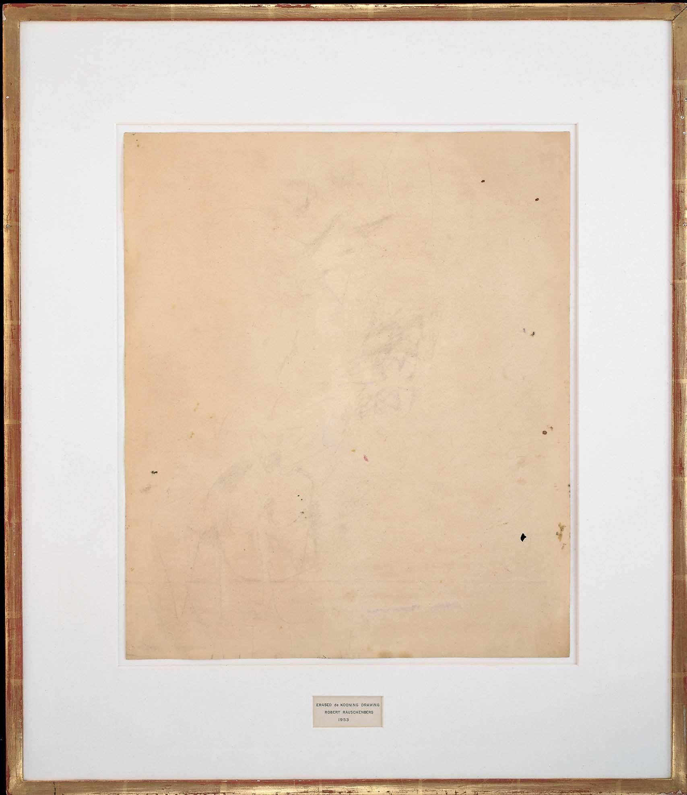
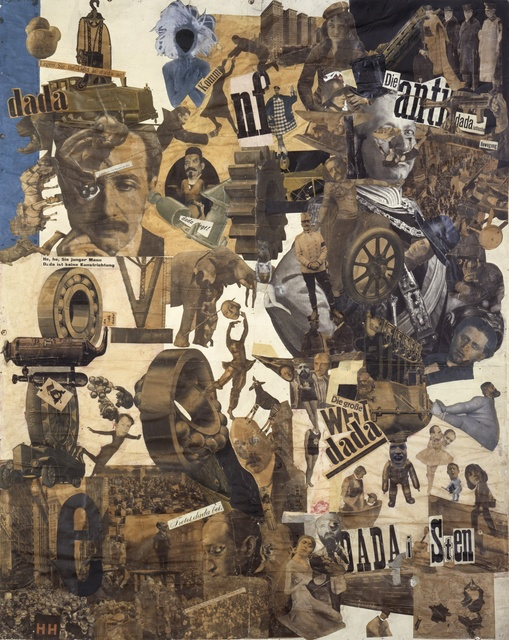
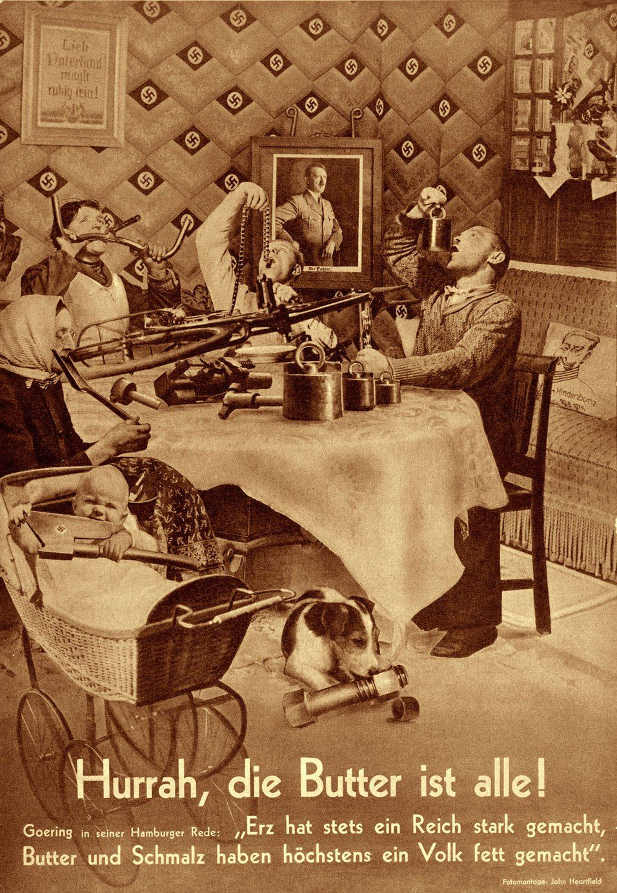
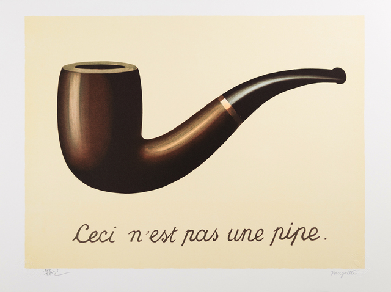

Erased de Kooning Drawing
로베르트 라우슨 (Robert Rauschenberg)

Cut with the Dada Kitchen Knife through the Last Weimar Beer-Belly Cultural Epoch in Germany
헤나 메트스-벡

Hurrah, die Butter ist alle!
존 하트필드 (John Heartfield)

The Treachery of Images
마그리트 (Magritte)